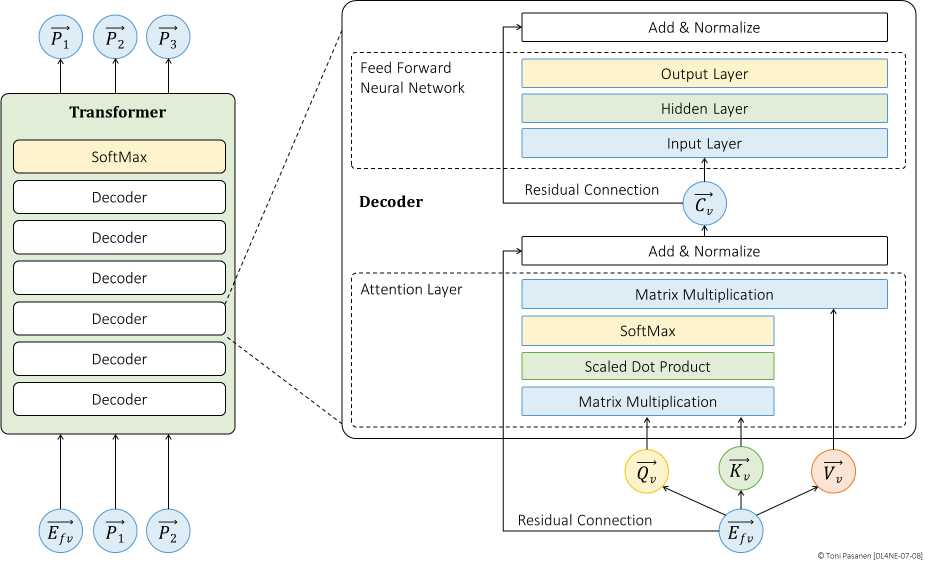
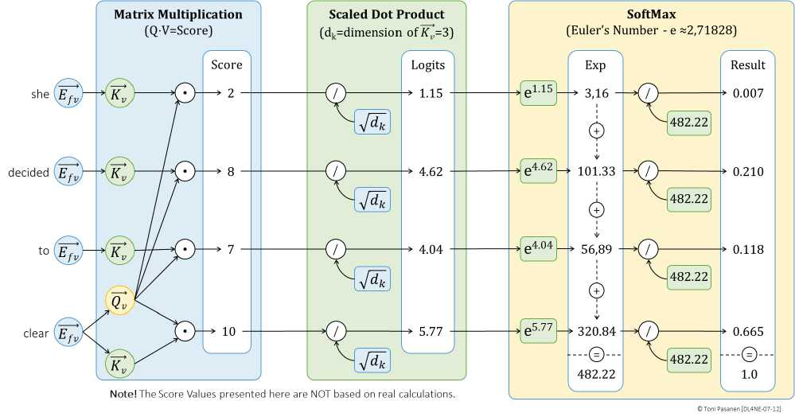

每个位置的嵌入派生出 Q（我要找什么）、K（我提供什么）、V（我的内容）。Q·Kᵀ 算相关度（clear 作动词时更关注 table），除以 √d_k 防过大，再 Softmax 得权重，加权 V 即上下文向量。书 p161-163 一步步算。
多头 Attention 并行看不同关系（语法/语义/位置）。残差（输入+输出）+ LayerNorm 让深层可训练，防退化。解码器堆叠 N 层后，顶层向量经 Softmax 预测下一个词概率 P（p161 全景图务必精读）。
参数百亿、d_model 上万、序列上千，单卡放不下、单机算不动，必须 Ch8 的三维并行 + Part II 的 lossless Fabric。本章结论即全书转折：模型越大，网络越关键。


用 Q/K/V 比喻一次故障排查：Q=现象，K=知识库，V=处置动作。